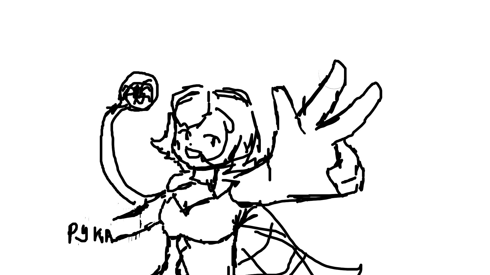
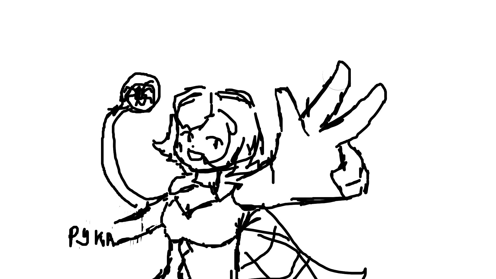

Как я начала рисовать
Меня начало увликать рисование ещё с детства, но полнаценно начала рисовать в 2019 году. Тогда я любила рисовать животных и многое другое
Как я училась
Училась я сама, помогало мне только всякие аниме либо же рисунки других людей. Так я набиралась у них пользы. Ну и сестра давала советы (которые я почти не слушала, ведь хочу сделать всё сама).
посмотрите это видео которое внизу чтоб скучно не было.
 
